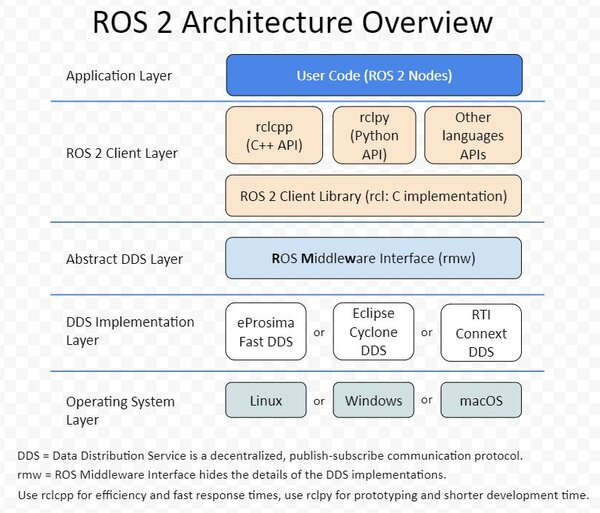

ROS2

开发ROS功能包¶
使用 colcon 构建工具构建多个功能包，每个包中都包含若干节点（node），每个节点对应一个.cpp/.py源文件。
对于cpp文件，使用CMake构建系统；对于python文件，使用setuptools构建系统。
一般的ros项目根目录为workspace，根目录下组织形式如下：
build目录存储的是中间文件。对于每个包，将创建一个子文件夹，在其中调用例如CMakeinstall目录是每个软件包将安装到的位置。默认情况下，每个包都将安装到单独的子目录中log目录包含有关每个colcon调用的各种日志信息
其中，install 目录结构一般会有 setup 脚本、每个包的子文件夹（其中包含 lib 和 share 目录）
使用 rclcpp 编写节点¶
第一步¶
进入src目录，创建功能包，编译类型选择 ament-cmake
第二步¶
在包目录的src目录下，创建节点源文件 node_01.cpp，实现节点逻辑
└── src
└── example_cpp
├── CMakeLists.txt
├── include
│ └── example_cpp
├── package.xml
└── src
└── node_01.cpp
#include "rclcpp/rclcpp.hpp"
int main(int argc, char **argv)
{
rclcpp::init(argc, argv);
auto node = std::make_shared<rclcpp::Node>("node_01");
RCLCPP_INFO(node->get_logger(), "node_01节点已经启动.");
rclcpp::spin(node);
rclcpp::shutdown();
return 0;
}
第三步¶
修改 CmakeLists.txt
ament_cmake 编写文档说明 https://docs.ros.org/en/lyrical/How-To-Guides/Ament-CMake-Documentation.html
cmake 文件整体结构如下
cmake_minimum_required(VERSION 3.20)
project(examples_cpp)
find_package(ament_cmake REQUIRED)
find_package(rclcpp REQUIRED)
// 其他ros依赖库
find_package(rclcpp_action REQUIRED)
find_package(example_interfaces REQUIRED)
// node_01示例
add_executable(node_01 src/node_01.cpp)
target_link_libraries(node_01
PRIVATE rclcpp::rclcpp
)
// 其余node以此类推
add_executable(...)
target_link_libraries(...
PRIVATE rclcpp::rclcpp
)
if(BUILD_TESTING)
find_package(ament_lint_auto REQUIRED)
ament_lint_auto_find_test_dependencies()
endif()
install(TARGETS
node_01
node_02
...
DESTINATION lib/${PROJECT_NAME})
ament_package()
使用 rclpy 编写节点¶
目录如下
.
├── example_py
│ └── __init__.py
├── package.xml
├── resource
│ └── example_py
├── setup.cfg
├── setup.py
└── test
├── test_copyright.py
├── test_flake8.py
└── test_pep257.py
在 example_py 目录实现节点逻辑
import rclpy
from rclpy.node import Node
def main(args=None):
rclpy.init(args=args)
node = Node("node_02")
node.get_logger().info("大家好，我是node_02.")
rclpy.spin(node)
rclpy.shutdown()
在 setup.py 中添加 entry
编译节点¶
使用colcon编译节点，并source setup文件后，该节点就会注册到ros系统中，可以在ros cli中使用
添加ROS API¶
需要在功能包的CMakelists.txt中添加
然后在package.xml中添加
TBD-ROS2节点通信¶
话题¶
服务¶
参数¶
动作¶
rosbag-时光记录仪¶
我们就可以使用这个指令将话题数据存储为文件 ，后续我们无需启动节点，直接可以将bag文件里的话题数据发布出来。
Ctrl-C结束录制后，记录的数据会存储在xxx.mcap文件中，可以重播该数据